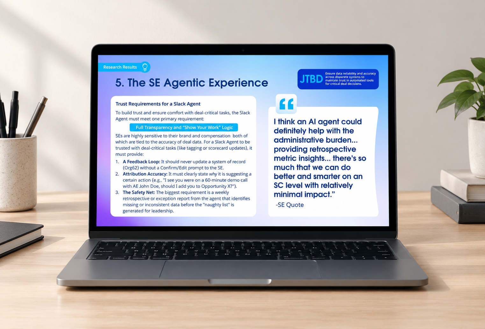
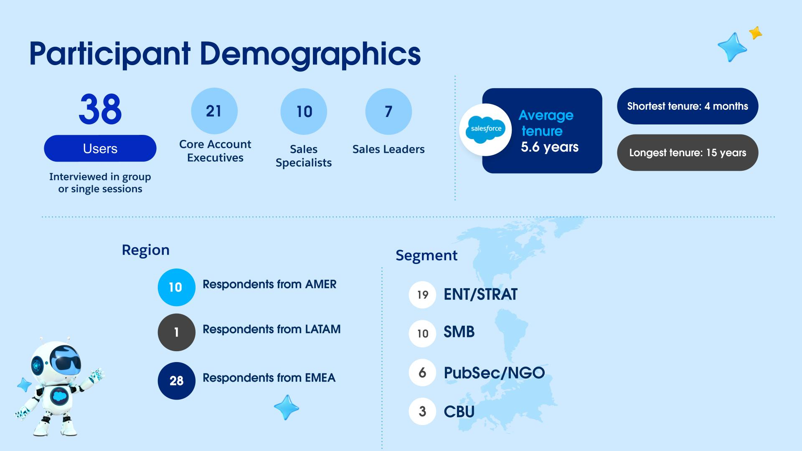
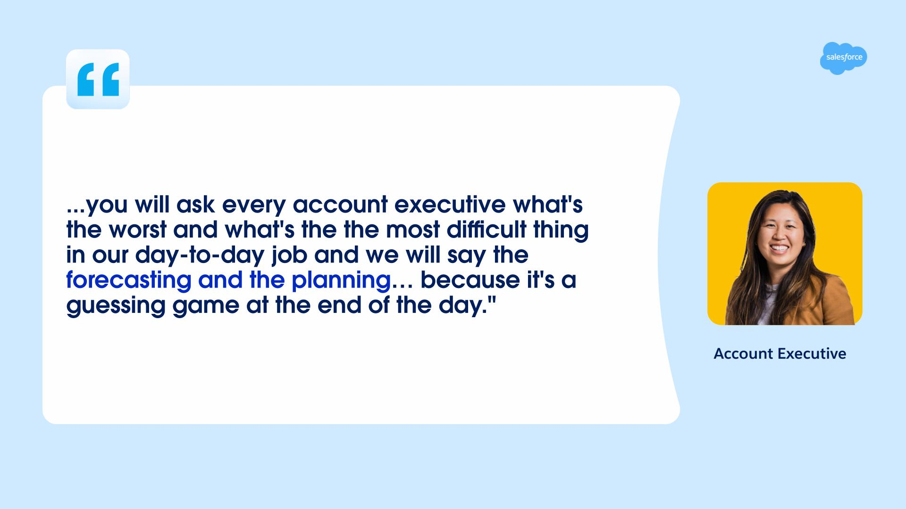
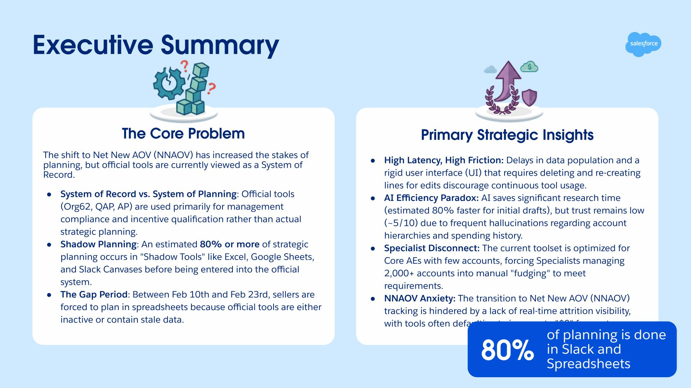

Research that reshaped a sales planning roadmap
Nobody was asking sellers how they actually use their planning tools. I spotted the gap, owned it, and turned it into research that changed the roadmap.

A critical tool nobody understood.
Account plans and quarterly account plans are required tools for sellers. But nobody on the team understood how sellers actually used them, or where they got stuck.
I spotted the gap and the deadline, and built a research plan from scratch to answer the questions nobody was asking.
Owning it end to end.
Spotted the gap
Built a plan so findings would land before roadmap decisions.
Designed the study
How do sellers really plan? Where do they struggle? What workarounds do they build?
Built the sample
Filtered 16,000 names and caught that sales leaders were missing. I got them added.
Ran it globally
Sessions across three regions at three different times, with every role represented.
Translated the jargon
Jumped in live to translate sales terms so the team read the data correctly.
Pushed upstream
Proposed a workshop to map insights straight to roadmap priorities.

Planning wasn't happening in the planning tools.

- About 80% of real planning happens in shadow tools like spreadsheets and Slack canvases. The official tools were a system of record, not a system of planning.
- A 13-day data gap between territory assignment and tool access forced sellers to plan by hand.
- The AI paradox: AI drafts were about 80% faster, but sellers rewrote about half of them and rated their trust around 5 out of 10. They wanted citations and live data.
- About 15 hours of manual re-entry during peak planning, roughly two full workdays.
"We are a CRM company, but we use Google Sheets."
Seller in the study
One study became a practice.
Started a program
This study became the template for a recurring Quarterly Seller Research Program.
Changed the roadmap
Findings fed the next year's sales planning roadmap, including territory intelligence and insight logic.
Moved UX upstream
UX now sits in strategy conversations from the start, instead of waiting for requirements.
Recognized by peers
The work earned five callouts in a team "Big Wins" recap.
The most valuable research is the research nobody asked for.
If I hadn't owned this, the gap would have gone unaddressed, the sample would have missed sales leaders, and the data could have been misread. Spotting the problem is part of the job.